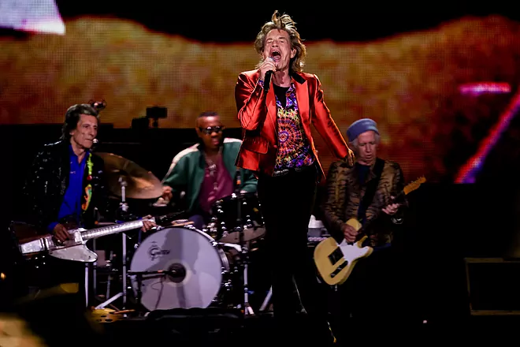
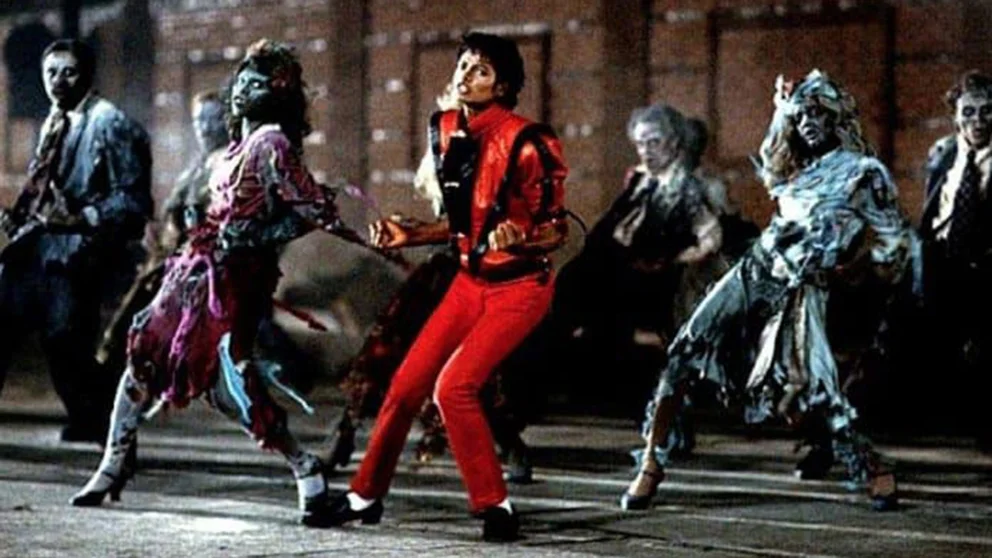
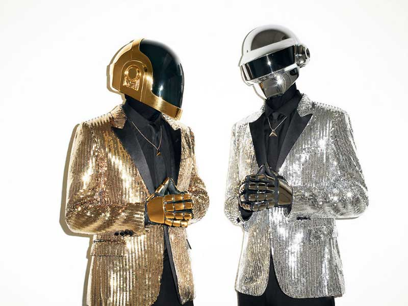

TopClip Rock Satisfaction
Es una canción que marcó huella en una época donde era casi obligado tomar posición entre las dos mejores bandas de rock de la historia. O se era fan de The Beatles o de The Rolling Stones. Una década, la de los 60’, prodigiosa y hasta ahora irrepetible. Satisfaction es un clásico, un himno, la canción que les catapultó a la fama, uno de los mejores riff de guitarra de todos los tiempos.
TopClip Rock Satisfaction / The Rolling Stones

Es una canción que marcó huella en una época donde era casi obligado tomar posición entre las dos mejores bandas de rock de la historia.
Más info
Más info
TopClip Pop Thriller / Michael Jackson

«Thriller» es una canción interpretada y coeditada por el cantante estadounidense Michael Jackson, compuesta por Rod Temperton y producida por Quincy Jones.
Más info
Más info
TopClip One More Time / Daft Punk

«One More Time» es una canción realizada por el dúo francés Daft Punk, lanzada inicialmente como sencillo el 13 de noviembre de 2000 y después incluida en el álbum de 2001 Discovery, y contó con la voz de Romanthony modificada con Auto-Tune.
Más info
Más info
TopClip A Dios le pido / Juanes
Este tema se convirtió en uno de los más clásicos de la discografía de Juanes, junto a las canciones "La Camisa Negra", "La Paga", "Es Por Ti", "Fotografía" y "Me enamora", las cuales salieron en un recopilatorio publicado por el canal estadounidense MTV titulado Juanes MTV Unplugged (2012).
Más info
Más info